Быстрый завтрак за 20 минут
Каши, омлеты и сырники — успеть до выхода из дома. 49 рецептов: у каждого время, калории и БЖУ на порцию, пошаговые инструкции и список покупок
- Смузи банан-ягоды5 мин · 158 ккал · Б 5 г · Напиток
- Тосты с арахисовой пастой и бананом7 мин · 452 ккал · Б 14 г · Завтрак
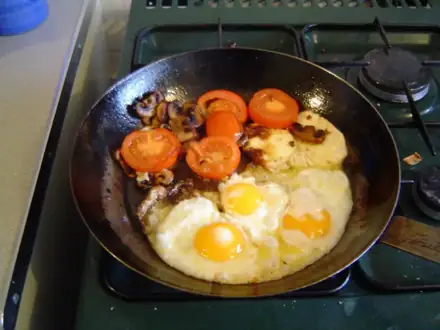
Яичница-глазунья с помидорами10 мин · 243 ккал · Б 15 г · Завтрак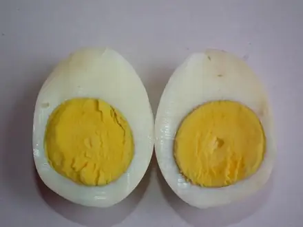
Яйца всмятку и в мешочек10 мин · 173 ккал · Б 14 г · Завтрак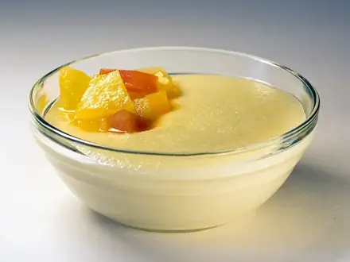
Манная каша10 мин · 307 ккал · Б 10 г · Завтрак- Творог с зеленью10 мин · 237 ккал · Б 27 г · Закуска
- Скрэмбл со сливочным сыром и зелёным луком10 мин · 294 ккал · Б 16 г · Завтрак
- Смузи-боул со шпинатом и бананом10 мин · 334 ккал · Б 14 г · Завтрак
- Яичница в хлебе (яйцо в гренке)10 мин · 249 ккал · Б 10 г · Завтрак
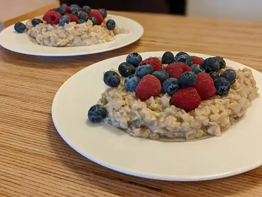
Овсяная каша на молоке12 мин · 347 ккал · Б 12 г · Завтрак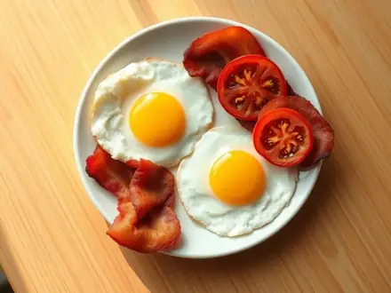
Яичница с беконом12 мин · 473 ккал · Б 28 г · Второе блюдо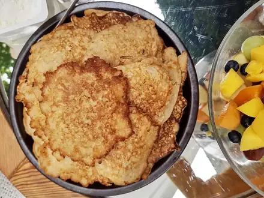
Овсяноблин15 мин · 339 ккал · Б 18 г · Завтрак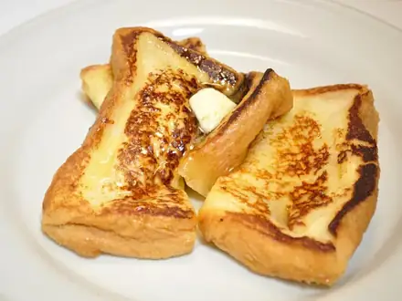
Гренки сладкие15 мин · 279 ккал · Б 9 г · Завтрак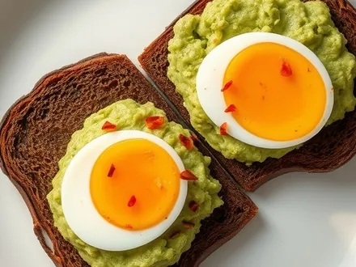
Бутерброды с авокадо и яйцом15 мин · 351 ккал · Б 13 г · Завтрак- Банановые панкейки из трёх продуктов15 мин · 294 ккал · Б 11 г · Завтрак
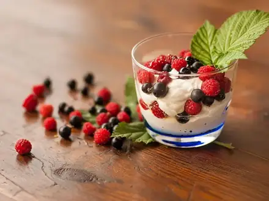
Творожный десерт с ягодами без выпечки15 мин · 204 ккал · Б 21 г · Десерт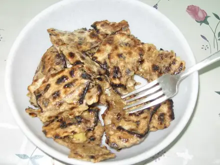
Мацебрай15 мин · 368 ккал · Б 15 г · Завтрак Омлет с курицей15 мин · 361 ккал · Б 34 г · Завтрак
Омлет с курицей15 мин · 361 ккал · Б 34 г · Завтрак Омлет с остатками овощей15 мин · 361 ккал · Б 18 г · Завтрак
Омлет с остатками овощей15 мин · 361 ккал · Б 18 г · Завтрак Жареная гречка с яйцом и луком15 мин · 445 ккал · Б 16 г · Второе блюдо
Жареная гречка с яйцом и луком15 мин · 445 ккал · Б 16 г · Второе блюдо- Омлет с тунцом и помидорами15 мин · 348 ккал · Б 37 г · Второе блюдо
- Тамагояки - японский омлет-рулет15 мин · 270 ккал · Б 18 г · Второе блюдо
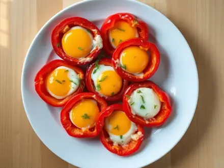
Яичница в кольцах болгарского перца15 мин · 349 ккал · Б 21 г · Второе блюдо- Омлет с сосисками на сковороде15 мин · 445 ккал · Б 23 г · Второе блюдо
- Омлет со шпинатом и фетой15 мин · 356 ккал · Б 22 г · Второе блюдо
- Омлет с крабовыми палочками15 мин · 360 ккал · Б 24 г · Второе блюдо
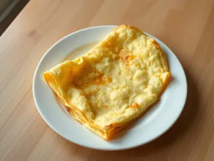
Омлет Пуляр - пышный французский омлет15 мин · 278 ккал · Б 14 г · Второе блюдо- Анда бхурджи - яичница-болтунья по-индийски15 мин · 342 ккал · Б 19 г · Второе блюдо
- Жареные грибы с яйцом и луком15 мин · 370 ккал · Б 23 г · Второе блюдо
- Лаваш с яйцом и сыром на сковороде15 мин · 620 ккал · Б 33 г · Второе блюдо
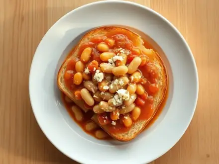
Тосты с фасолью в томатном соусе15 мин · 466 ккал · Б 19 г · Второе блюдо- Яйца пашот на тосте15 мин · 389 ккал · Б 19 г · Завтрак
 Несладкие гренки с яйцом и сыром на сковороде15 мин · 439 ккал · Б 19 г · Завтрак
Несладкие гренки с яйцом и сыром на сковороде15 мин · 439 ккал · Б 19 г · Завтрак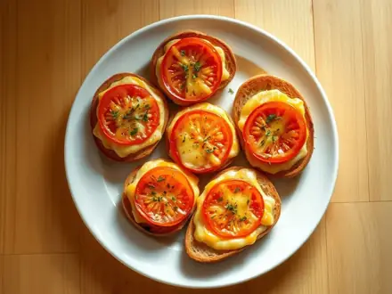
Горячие бутерброды с помидором и сыром в духовке15 мин · 379 ккал · Б 16 г · Завтрак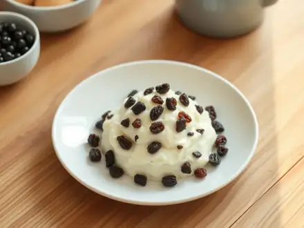
Творожная масса с изюмом и сметаной15 мин · 346 ккал · Б 27 г · Завтрак- Постный скрэмбл из тофу с помидорами15 мин · 216 ккал · Б 13 г · Завтрак
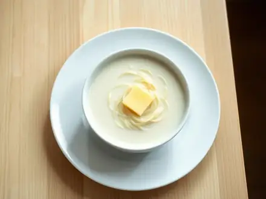
Молочный суп с вермишелью15 мин · 240 ккал · Б 9 г · Суп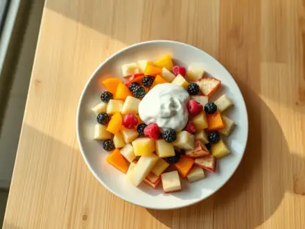
Фруктовый салат с йогуртом15 мин · 155 ккал · Б 4 г · Салат- Омлет на пару20 мин · 223 ккал · Б 16 г · Завтрак
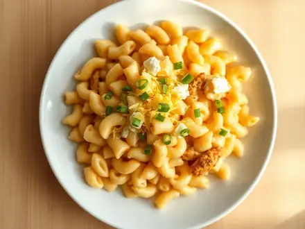
Макароны с яйцом на сковороде20 мин · 521 ккал · Б 21 г · Второе блюдо Картофельные оладьи из вчерашнего пюре с сыром20 мин · 530 ккал · Б 17 г · Второе блюдо
Картофельные оладьи из вчерашнего пюре с сыром20 мин · 530 ккал · Б 17 г · Второе блюдо- Конвертики из лаваша с ветчиной и сыром на сковороде20 мин · 768 ккал · Б 37 г · Второе блюдо
- Горячие бутерброды с фаршем на сковороде20 мин · 773 ккал · Б 31 г · Второе блюдо
- Гёзлеме из лаваша со шпинатом и брынзой20 мин · 627 ккал · Б 28 г · Второе блюдо
- Омлет с грибами и сыром20 мин · 394 ккал · Б 26 г · Второе блюдо
- Чижи-пижи - яйца с луком по-грузински20 мин · 348 ккал · Б 19 г · Второе блюдо
- Шпинат с яйцами по-турецки на сковороде20 мин · 345 ккал · Б 17 г · Второе блюдо
- Буррито на завтрак с яйцом и фасолью20 мин · 572 ккал · Б 31 г · Завтрак
- Омлет с кабачком и сыром20 мин · 328 ккал · Б 21 г · Завтрак
Другие подборки
- Что приготовить из курицы
- Что приготовить из фарша
- Что приготовить из мяса
- Что приготовить из рыбы
- Что приготовить из картошки
- Что приготовить из яиц
- Что приготовить из творога
- Что приготовить из кабачков
- Что приготовить из капусты
- Что приготовить из грибов
- Что приготовить из риса
- Что приготовить из макарон
- Что приготовить из гречки
- Быстрый ужин за 30 минут
- Что приготовить на скорую руку
- ПП-рецепты: лёгкие блюда до 400 ккал
- Белковые блюда: от 25 г белка на порцию
- Дешёвые рецепты из простых продуктов
- Что приготовить ребёнку
- Постные блюда
- Блюда на пару
- Что приготовить в духовке
- Простые супы
- Простые салаты
- Выпечка и десерты
- Блюда на праздничный стол
- Что приготовить из остатков